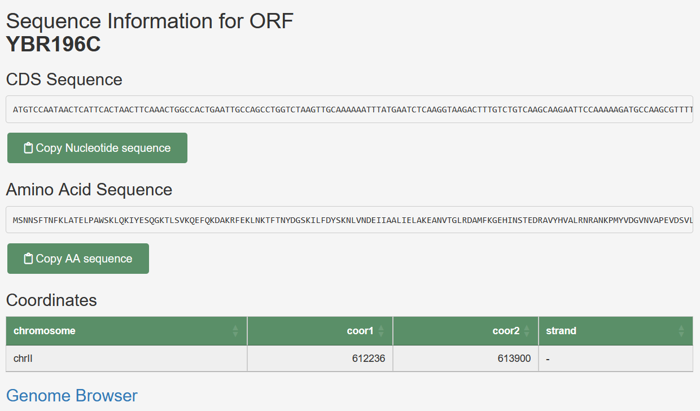
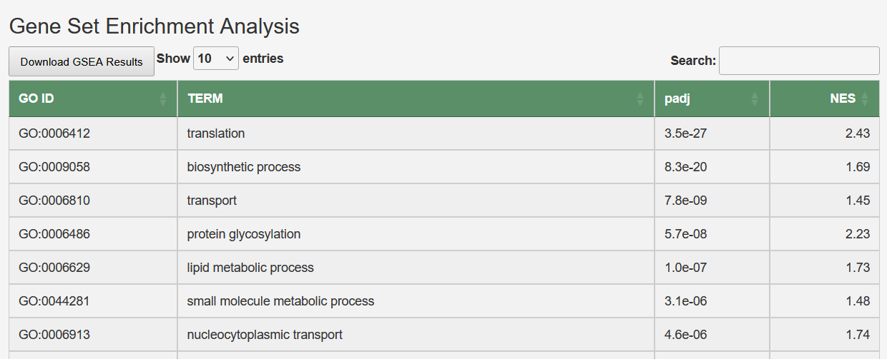
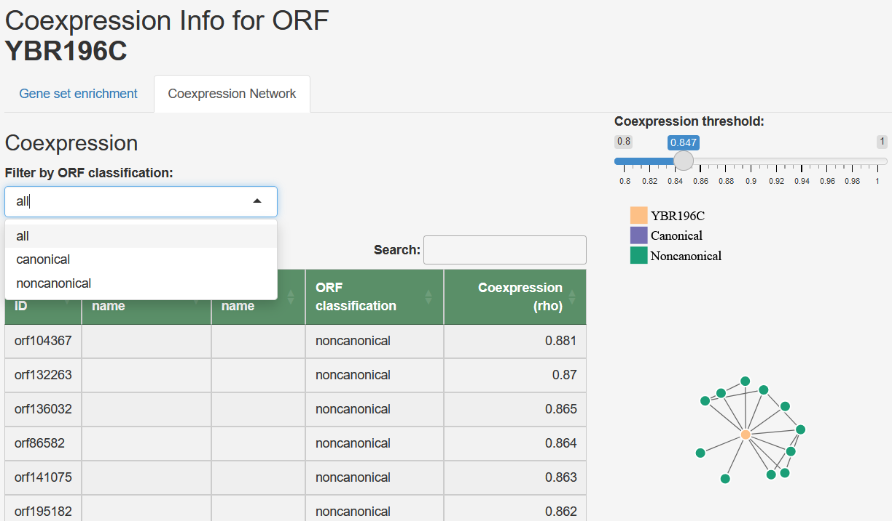

This website accompanies 'Massively integrated coexpression analysis reveals transcriptional regulation, evolution and cellular implications of the noncanonical translatome' paper.
All relevant supplementary data can be found at figshare.
To calculate coexpression at the translatome scale in S. cerevisiae, we integrated a vast dataset of RNA-seq samples, applied center log ratio (clr) transformation, and used the proportionality metric ρ for quantification. We addressed data sparsity and reliability by discarding observations with low raw counts and setting a minimum sample threshold, resulting in an 11,630 by 11,630 coexpression matrix. Additionally, we normalized the data using spatial quantile normalization (SpQN) to correct for expression level biases, and created a network representation by considering only the top 0.2% of ρ values between all ORF pairs.
The list of RNA-Seq data we used is listed in Supplementary Data 1
To determine the transcriptional associations of nORFs with specific cellular processes, we performed gene set enrichment analyses (GSEA) on the coexpression partners of each cORF and nORF. In this method, we took an ordered list of genes, sorted by their coexpression level, and assessed whether higher-ranked genes were preferentially annotated with specific Gene Ontology (GO) terms. This approach allowed us to identify potential functional associations of nORFs and cORFs with various cellular processes based on the patterns of coexpression.
See methods of our paper for details
Main Navigation: At the top, you'll find a navigation bar titled 'ORF Information App.'
This contains two main tabs: 'Search' and 'About.'
Using the Search Function
Accessing the Search Tab: Click on the 'Search' tab to begin exploring ORF data.
Entering ORF Name:In the sidebar, there's a text input field labeled 'Enter your ORF name here.' Type the name of the ORF you're interested in (e.g., orf14870, YBR196C, PGI1).
Selecting Result Type: Below the text input, choose the type of results you want to view: 'Coexpression' or 'Sequence.'
Submit Your Query: After entering the ORF name and selecting the result type, click the 'Submit' button to proceed.
Sequence Information: If you chose 'Sequence' in the result type:
A section will appear displaying the sequence information of the ORF, including CDS (coding sequence), amino acid sequence, and genomic coordinates. You can copy sequences to clipboard for further use.
Coexpression Information: If 'Coexpression' is selected:
The app will display coexpression information related to the ORF. It includes a detailed analysis like Gene Set Enrichment (corresponds to Supplementary Data 4 in Rich et al.) and a Coexpression Network (corresponds to Supplementary Data 3 in Rich et al.), which helps understand the ORF's relationship with other genes and its potential cellular roles.
Gene set enrichment analysis example
Coexpression data
You can use sliders and filters to refine the coexpression network and thresholds.